🏛️📲 GREEK SQUAT: plug in their phone, then go grieve
phone+net+I.C.K.S. · rush patch for Mon Nov 2, 2026 · built in one night, the day after the loss of the person in care · steps and counts only: no names, no content, no medical detail
🫀 People keep their heart and mind on their phone. When they pass, that phone is the squat: the data left behind, and to most families it's all Greek. GREEK SQUAT is a reverse prep: one cable, a few steps only a person can do, and then the computer does the rest while a status screen on their own phone says what is happening.
🌱 How it came about
- 🛋️ The caregiver sat in the empty chair, saw the phone and the tablet, and thought: I'll need to check this out. Recipes saved for years, recordings of stories in their own voice, photos of costumes they made.
- 🔌 One working data cable. The ask that night: pull texts, calls, voicemails, notes, photos and saved recipes, and make a report, without the caregiver living at the computer.
- 🧰 The tools already existed for the care record (phone pulls, the job board, local models). That night they were pointed at a goodbye instead.
- 🏷️ The name: "it's all Greek to me" + "squat" (slang for nothing, and here the stale data a life leaves behind). Keep it secret, keep it local.
🗺️ The workflow
Loading diagram…
📝 Show the raw Mermaid text
💡 Breakthroughs
| 🎙️ Voicemail | Carrier voicemail lives inside the voicemail app, out of reach of a normal pull. The app's own Share button writes each one to the phone's storage. A script taps Share (never Delete) on every message and logs who and when, because the saved file is named by the save time, not the call time. |
| 🔀 One cable | The pull was reordered on request: storage and records first (5 minutes), the slow attachment copy made resumable, so the single data cable could move to the tablet and come back. |
| 📟 Status on their phone | The phone being saved shows a full-screen status page (logo, a ring per step, time left) served from the home computer through the same USB cable. No Wi-Fi, no app to install, counts only. |
| 🧾 Status to date | Twenty older reports, every running job and every data source merged into one page with fresh/stale lights, rebuilt every 10 minutes without an AI model. |
| ✋ Person / machine line | Consent steps stay with the person: Trust on the tablet, the Google export, the Facebook export, passwords. The machine does the background copying. Two failed tries on a screen step = hand it back to the person. |
| 🍎 + 🤖 | Android over adb, Apple over a full local backup that starts on its own when the tablet says Trust. Same storage, same reports. |
🔢 By the numbers (rounded)
| 💬 ~4.7k | texts, plus ~4.5k picture messages and ~6.5k attachments |
| 📞 ~2k | call-log rows · ~100 contacts · ~700 calendar entries |
| 🎙️ 13 | voicemails saved from inside the voicemail app (duplicates removed by content hash) |
| 📁 ~550 MB | phone storage, ~1k files |
| 🧾 20 | older reports merged into one status page |
🧯 What went wrong, and the rule it left
- 🪪 Wrong owner: the AI guessed whose phone it was from three letters of a hidden account name. Rule: compare the full value on the home computer, show only "match / no match". (rack-and-ruin CVE-FAUX-2026-0882)
- 🔄 Scroll loop: a "check" pass scrolled up at the top of a mobile web page, which reloaded it and undid the choices; then the AI called the person's screen stale. Rule: the person's screen is the record; a check that scrolls is an action. (CVE-FAUX-2026-0883)
- 🏷️ Mixed labels: the first voicemail pass gave each file the time of the message above it. Caught from the log in minutes, fixed, rerun; the bad list kept aside.
🛡️ How it stays safe
- 🏠 Everything lands on a local disk, locked to one user. Messages and recordings are read by local models only.
- 🔑 Only for the executor or next of kin, with the device passcode. Needing the passcode is the consent line.
- ⚠️ Archive before telling Google, Yahoo or Facebook about the death; reporting can close the account.
- 👀 The on-phone status page shows counts, never names or message text.